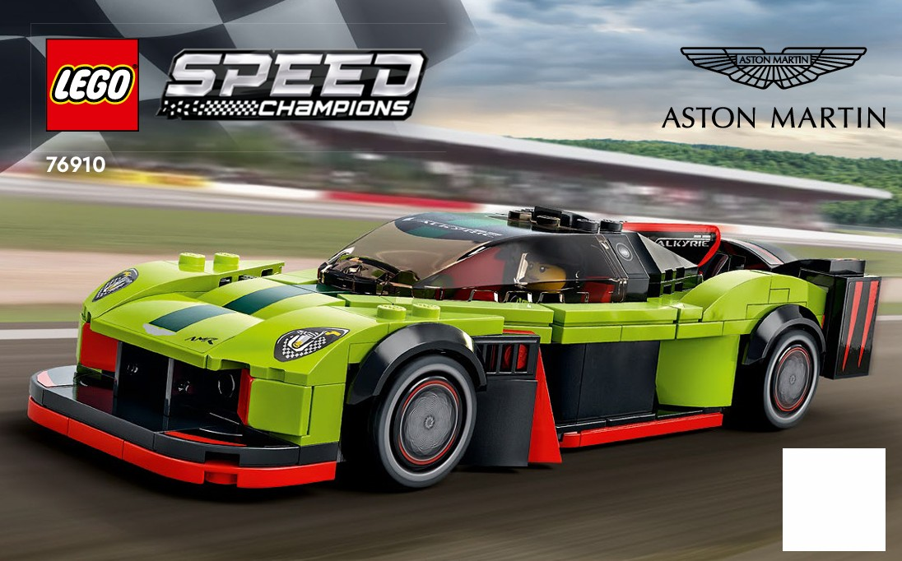
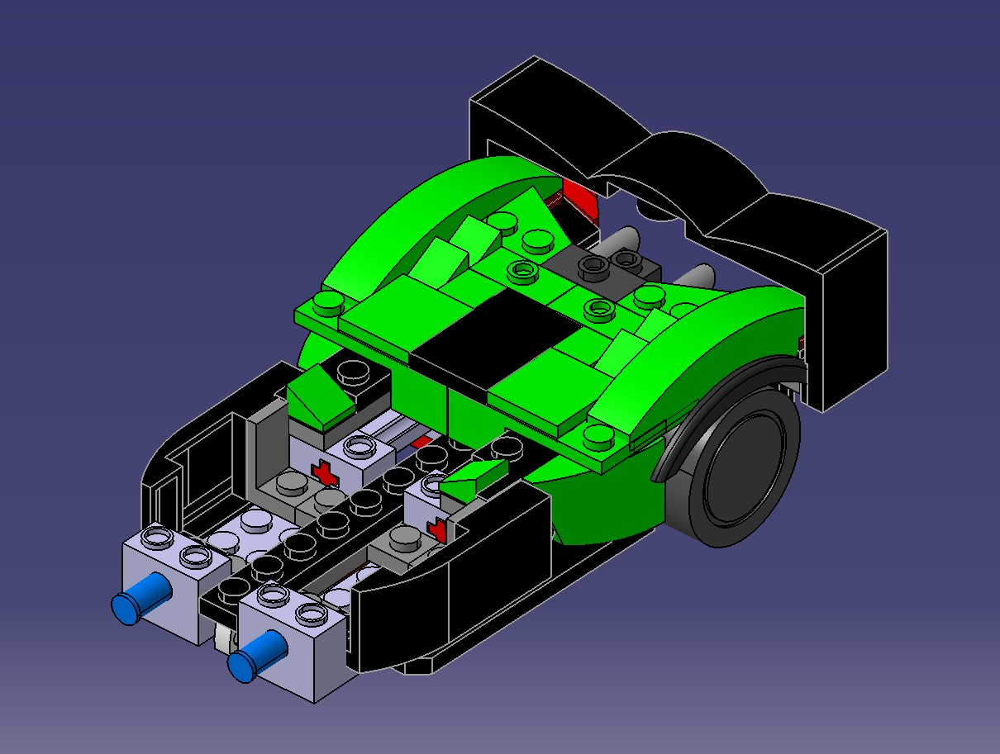
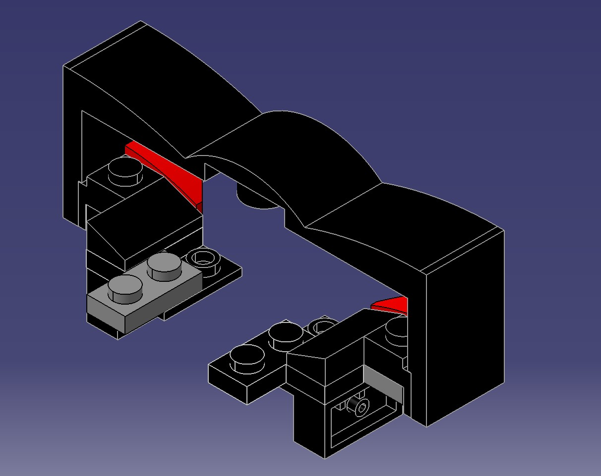

Engineering Highlights
Reverse Engineering the Vehicle

The project began by examining the physical LEGO Aston Martin Valkyrie and dividing it into four primary sections. Each team member was responsible for measuring and recreating a different portion of the vehicle in CATIA V5. This approach allowed the complete model to be developed simultaneously while maintaining the proportions and geometry of the original LEGO design.
Rear Section Design

I was responsible for designing the complete rear section of the vehicle, including the rear wing. The subassembly was modeled by recreating the dimensions and connections of the original LEGO pieces while ensuring compatibility with the remaining vehicle assemblies.
Rear Spoiler Assembly

The rear spoiler was modeled as a separate subassembly to simplify the design process and improve assembly organization. Particular attention was given to the mounting features and alignment so the spoiler could be integrated seamlessly into the completed rear assembly.
Final Vehicle Assembly

Once every team member had completed their assigned components, I assembled the individual subassemblies into a single CATIA product. This required verifying part alignment, correcting interfaces between assemblies, and ensuring that the completed digital model accurately represented the original LEGO vehicle.
Final Render

To complete the project, I created a rendered visualization of the assembled LEGO Aston Martin Valkyrie positioned at Daytona International Speedway. The render combined the finished CAD model with a recognizable local landmark, providing a professional presentation of the completed engineering design.